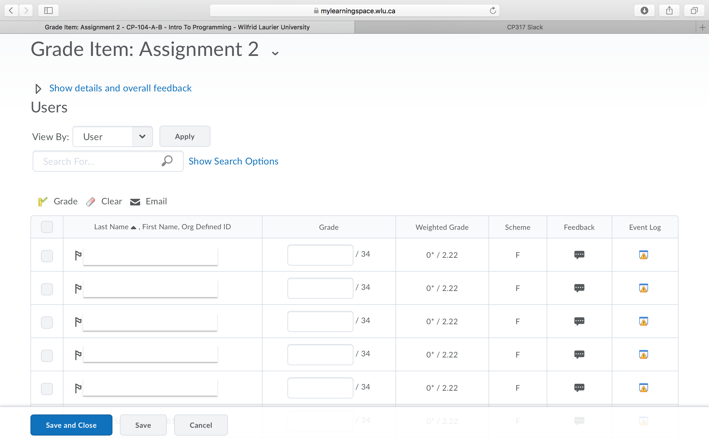
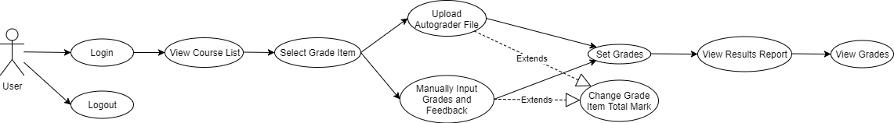
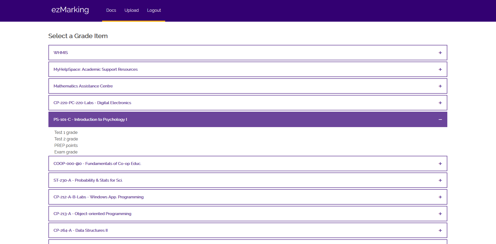
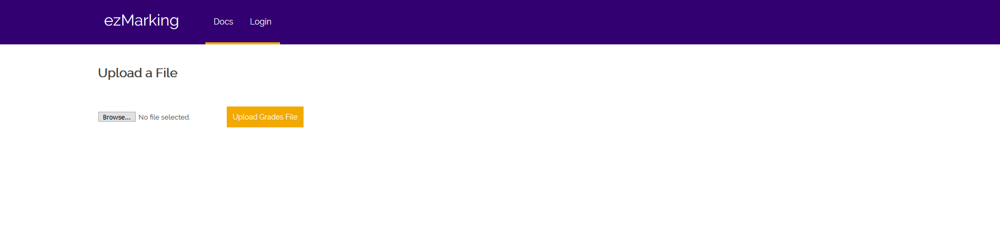
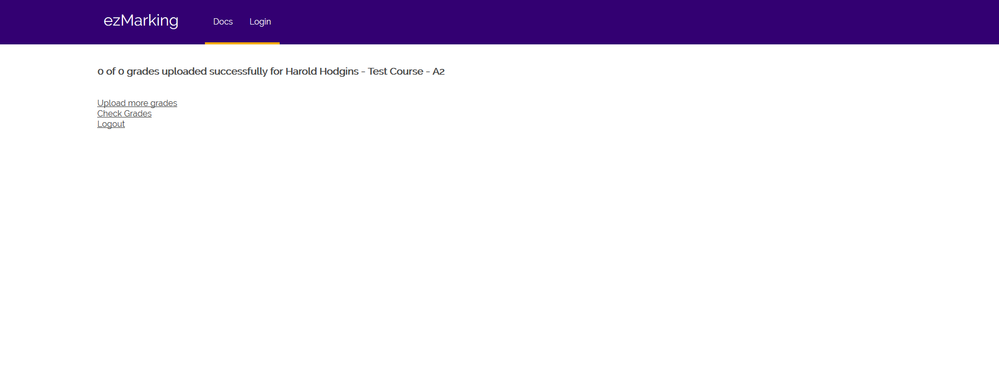

ezMarker - Software Requirements
Version 5.0
Last updated: November 21, 2017
Table of Contents
Introduction
ezMarker is a web application that allows instructors to upload grades and feedback onto MyLearningSpace with ease. Autograder (MLS) is Wilfrid Laurier University's online learning management system. It is a rebranded version of Autograder, created by Autograder (D2L). This educational platform allows students and instructors to communicate, share resources, and keep track of academic progress. A vital part of this system is a feature that allows instructors to set grades and give feedback on student work. The current feedback system on MLS becomes tedious and is time consuming when giving feedback for large classes, since feedback must be manually set for each student. ezMarker makes it faster to grade students by allowing bulk grade and feedback uploading with the use of the Brightspace API.
A driving force behind reworking the feedback feature is the Autograder program, currently used by the computer science department at Wilfrid Laurier University. This program generates the files that ezMarker uploads.
ezMarker builds on and extends an existing project developed by Harold Hodgins for the upload of grades and feedback on MLS.
Purpose
This document lists the requirements of the ezMarker project, and has been created for developers as a basis for their work and to help the client understand the functionality of the software.
The remainder of this document explains the details of interfaces, software platforms used, product design, and functionality. The document follows the IEEE Software Requirements Specifications document standards.
Scope
ezMarker is a website that adds extended functionality to the MLS platform by providing an interface for setting student grades and feedback that is superior to the current MLS implementation. In the existing system feedback has to be set individually for each student. For courses with many students, inputting feedback for each student can take hours. ezMarker provides an alternate user interface that reduces grade recording time to minutes by allowing users to upload a single file that contains both grades and feedback for any students the user wishes to mark.
After logging into ezMarker, the marker selects a course and a grade item (ex. Midterm 1). The marker then uploads a file with the grades and feedback they want submitted to that grade item. ezMarker parses the file and uses the Brightspace API to set the grades and feedback in MLS. Following this, the marker is brought to a report page where they can see the results of the upload. Finally, they are given the option to do another upload or to logout.
ezMarker also offers users the ability to change the maximum grade value and manually input grades and feedback for selected students, such that ezMarker can replace the current MLS website for all marking purposes.
There are both PHP and Python versions of ezMarker.
The current MLS interface for uploading grades:

Definitions
- Autograder: A program used by Wilfrid Laurier computer science professors and TAs to mark programming assignments. The program outputs a formatted text file (.txt) containing grades and feedback for the student assignments it has marked.
- Autograder Formatted Text File: A formatted text (.txt) file created by the Autograder program containing grades and feedback for the student assignments it has marked. The format can be reproduced manually in any text editor.
- Brightspace: A learning management system (LMS) produced by D2L.
- Brightspace API: API developed by D2L for their Brightspace LMS, used for authentication for entry into the ezMarker website and to upload student grades and feedback in batches.
- D2L: A Waterloo-based company that produces learning management software. They are the creators of Brightspace.
- MyLearningSpace (MLS): Laurier's online learning management system for students and professors. This software is a rebranded version of Brightspace.
References
- IEEE. IEEE Std 830-1998 IEEE Recommended Practice for Software Requirements Specifications. IEEE Computer Society, 1998
- “MLS API Report”, April 30th 2017, Harold Hodgins, Wilfrid Laurier University
Overall Description
Product Functions
- Upload an Autograder formatted text file to set grades and feedback in MLSfor all students in a course.
- Manually input grades and feedback to be set in MLS for selected students in a course.
- Change the maximum grade for a grade item.
Product Perspective
ezMarker is a web-based application that allows users to set student grades and feedback in MLS through the use of the Brightspace API. Users are able to set grades and feedback by uploading Autograder formatted text files or by manually inputting information into a webpage. There will be no consideration for mobile usability.
User Interfaces
- MLS Login Page
- Course List Page
- Shows all courses from current term for which that user has permission to set grades.
- Grade Item Page
- User can upload an Autograder formatted text file.
- User can also search for students and manually input grades and feedback.
- User can update the maximum grade of a grade item.
- Report Page
- Displays outcome of set grades and feedback operation.
Logout Page
Use Cases

User Characteristics
Users are MLS users with permissions to set grades for students (i.e. professors and TAs). Basic computer literacy is required for the use of ezMarker.
Constraints
Development is constrained by the capabilities of the Brightspace API and the development skills of the team.
Dependencies
ezMarker is dependent on continued support for the Brightspace API and the Autograder.
Software Requirements
User Interfaces
Login Page
- The user signs into the website using their MLS login credentials. Brightspace generates this page.
Course Page
- Once logged in, the user is presented with a list of courses that they have permission to upload grades to. Courses should be sorted by course number.
- Selecting a course expands/collapses the course's grade items, if no grade items are present a warning message appears underneath rather than the items.
- When selecting grade items users will be notified if they do not have permission to set grades for any course otherwise the Grade Item page opens once a grade item is selected.
- A pop up window opens, when the user selects help within the navigation bar. This shows the user the basic of how to use the courses page.
Grade Item Page
- A Choose File button opens a file dialog for selecting an Autograder formatted text file.
- An Upload Grades File button uploads the file and sets the grades and feedback for the student listed in the file.
- An Update Grade Maximum button allows the user to change the maximum grade of the current grade item.
- A search bar appears below the above form, giving the user an option to set grades and feedback manually for individual students. Otherwise, the user can proceed.
- Selecting a student returned by the search results adds Grade and Feedback input boxes (with the student's name and ID acting as a label above them) to the page. An X icon next to the student's ID removes the input boxes from the page.
- There is a Select All button next to the search bar for quickly adding input boxes for all students.
- A Set Grades button sets grades and feedback using the manually input information.
Report Page
- A report page shows how many grades were successfully set. Any errors in the submission are also displayed.
- The report page has a Check Grades button (links to MLS page with all grades for that grade item).
Logout Page
Navigation Bar
- ezMarker logo
- Course Page link
- Help documentation link
- Logout Page link
- Displays the user's name
Additional Notes
- The site works on standard web browsers (Internet Explorer, Mozilla Firefox, Google Chrome, Safari).
Functional Requirements
Login
Occurs when user clicks the Login button on the Login page.
- If the Brightspace API cannot identify the user, they can not login and use the service.
- If the login is valid, the user is brought to the Course List page.
Upload file
Occurs when the user has selected a file and submits the form.
- If the file is not a correctly formatted Autograder text file, an error message is displayed and no grades are uploaded.
- If a necessary parameter for a grade is missing, that grade is not accepted.
- Only grades for which the total grade is greater than or equal to the grade received are accepted (i.e. 45/23 is not a valid grade).
- Should the maximum grade be smaller than the grade received, the user is prompted to continue (and skip the student) or modify the total of the grade item.
- Grades are only accepted for students that are currently enrolled in the selected course.
- The results of the parsing are relayed to the user on the Report page.
Search students
Occurs when the user types into the search bar on the Grade Item page.
- The search dynamically filters students by name until a numeric character is entered, at which point student IDs are searched.
Get manually input data
Occurs when the user has clicked Set Grades.
- The data that has been input for the selected student(s) is validated and uploaded to MLS through the Brightspace API.
- Only grades for which the total grade is greater than or equal to the grade received are accepted (i.e. 45/23 is not a valid grade).
- Should the total grade be smaller than the grade received, the user is prompted to continue (and skip the student) or modify the total of the grade item.
- If no grade value has been entered for a student, the user is prompted to choose if they want to go back and set a grade value or continue. If they continue, no grade is set for the student.
- Any unaccepted grades are relayed to the user on the Report page.
Update Grade Maximum
Occurs when the user clicks the Update maximum grade button.
- The grade maximum is updated if the input is a positive number.
Set grade and feedback data
Occurs when manually inputted data has been submitted or a formatted file has been uploaded.
- The Brightspace API handles the backend for uploading and setting the students' grades and feedback.
Logout
Occurs when the user clicks Logout.
- User is directed to the Brightspace logout page and their session is terminated.
- The user will need to return to ezMarker to login again.
- The site can handle a file containing hundreds of records in a reasonable amount of time.
- The site can handle multiple concurrent users.
Security Requirements
- Only those who have MLS credentials are allowed past the login page.
Appendix A: UI Prototypes
Course List Page

Grade Item Page

Report Page

Revision History
Version 1.0 - 09/27/2017
Authors: Lucas Boulanger, Tyler Gwynn, Sarah Johnston, Troy Nechanicky, Deep Raithatha
SQA: Xiang Ke, Mark Kokanovic, Harjodh Singh, Linda Zhang
Version 2.0 - 10/02/2017
Revision Notes:
- Added more detail to the Introduction and Scope.
- Added reference links to Definitions section.
- Changed several sections from past tense to present tense.
- Revised several sections to increase clarity, ensure detail to spelling, grammar and clarity.
- Removed some erroneous images from Appendix A.
Authors: Lucas Boulanger, Tyler Gwynn, Sarah Johnston, Mark Kokanovic, Troy Nechanicky
SQA: Deep Raithatha, Harjodh Singh
Version 3.0 - 10/22/2017
Revision Notes:
- Added additional requirement to allow user to change grade item total.
- Added Update maximum grade button to requirements.
- Cleaned up HTML.
- Generalized Autograder file format to .txt format.
- Links to outside resources now open in new window.
- Mentioned building on existing project.
- Mentioned that both PHP and Python versions are being developed.
- Revised section 1 - Introduction: Added reference to Autograder.
- Revised section 1.3 - Definitions.
Authors: Lucas Boulanger, Troy Nechanicky
SQA: Tyler Gwynn
Version 4.0 - 10/XX/2017
Revision Notes:
- Fixed duplicate section numbers due to integration with Table of Contents generator.
- New logout page description
Authors: Lucas Boulanger
SQA: Troy Nechanicky
Version 5.0 - 11/21/2017
Revision Notes:
- Added information in section 3 for User Interface Design that reflects the Deign doc.
- Improved introduction
- Minor edits for clarity
Authors: Simranjit Dhunsi, Mohamed Al-Thibeh, Troy Nechanicky
SQA: Troy Nechanicky